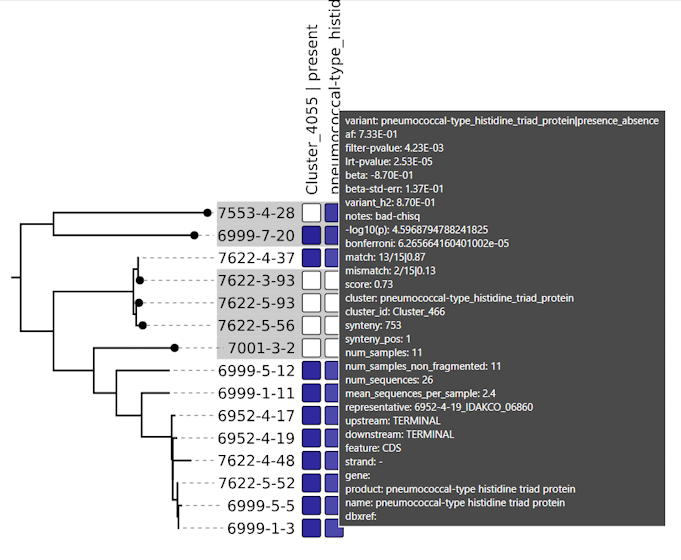

panGWAS


panGWAS is a pipeline for pangenome wide association studies. It reconstructs a pangenome from genomic assemblies, performs annotation and variant calling, estimates population structure, and models the association between genomic variants and variables of interest.

panGWAS is implemented as a python package and CLI tool, that can be run on any POSIX-based system (Linux, Mac). We additionally provide a nextflow pipeline for end-to-end analysis.
Please see the extended documentation at: https://phac-nml.github.io/pangwas/
Table of Contents
Why panGWAS?
panGWAS is distinct from other pangenome/GWAS workflows because it:
- Provides end-to-end analysis, from genomic assemblies to GWAS results.
- Includes both coding and non-coding sequences in the pangenome.
- Ensures reproducible, deterministic results.
- Offers both sensible defaults and extensive customization of underlying tools.
- Keeps variants tightly linked to their annotations for easier interpretation at each stage.
Method
panGWAS performs the following analyses:
- Annotate: Standardized annotation of genomes* with
bakta. - Cluster: Identify genomic regions with shared homology using
MMseqs2. - Align: Concatenate and align clusters with
mafft. - Variants: SNPs, presence absence, and structural variants.
- Tree: Estimate a maximum-likelihood tree with
IQ-TREE. - GWAS: Model the association between variants and traits with
pyseer. - Plot: Manhattan plots, tree visualizations, heatmaps of signficant variants, QQ plots.
* For non-bacterial genomes, you will need to bring your own gff annotations.
Install
Conda
❗ Pending release of the bioconda recipe.
conda create -n pangwas -c conda-forge -c bioconda pangwasDocker
❗ Pending release of the bioconda recipe.
docker pull quay.io/biocontainers/pangwas:latestNextflow
nextflow pull phac-nml/pangwasSource
Install pangwas from the github repository:
micromamba env create -f environment.yml -n pangwas
micromamba activate pangwas
pip install .Build the Docker image from the github repository:
docker build -t phac-nml/pangwas:latest .Usage
For more information, please see the Manual and Pipeline Documentation.
CLI
Individual commands can be run via the command-line interface:
pangwas extract --gff sample1.gff3
pangwas extract --gff sample2.gff3
pangwas collect --tsv sample1.tsv sample2.tsv
pangwas cluster --fasta sequences.fasta
...For an end-to-end example using the CLI, please see the Command-Line Interface example.
Python
Individual commands can be run as python functions:
import pangwas
pangwas.extract(gff="sample1.gff3")
pangwas.extract(gff="sample2.gff3")
pangwas.collect(tsv=["sample1.tsv", "sample2.tsv"])
pangwas.cluster(fasta="sequences.fasta")
...For an end-to-end example using python, please see the Python Package example.
Nextflow
An end-to-end pipeline is provided via nextflow:
nextflow run phac-nml/pangwas -profile testFor more examples, please see the tutorials. We recommend the Pyseer tutorial, which automates and reproduces the results from the penicillin resistance GWAS created by the pyseer authors:

Output
Plots: PNG and SVG files under the
manhattanandheatmapdirectories.❗Tip: Open the SVG in Edge or Firefox, to get hovertext!
Manhattan Heatmap QQ Plot 
 
GWAS Tables: Statistic results per variant.
variant af filter-pvalue lrt-pvalue beta beta-std-err variant_h2 notes -log10(p) bonferroni … pbpX|snp:G761A 3.78E-01 6.12E-94 3.01E-25 7.42E-01 6.82E-02 4.05E-01 24.521433504406158 1.180414561594032e-06 … pbpX|snp:T1077C 3.85E-01 1.11E-95 1.43E-24 7.23E-01 6.76E-02 4.00E-01 23.844663962534938 1.180414561594032e-06 … Trees: We recommend Arborview for interactive visualization of the newick files!

arborview Pangenome: We recommend Bandage for interactive visualization of the pangenome graph!
- GFA files can be found under
summarizefor both the full and linearized version of the pangenome.

- GFA files can be found under
And much more!
Credits
panGWAS is built and maintained by Katherine Eaton at the National Microbiology Laboratory (NML) of the Public Health Agency of Canada (PHAC).
If you have any questions, please email ktmeaton@gmail.com.
 Katherine Eaton üíª üìñ üé® ü§î üöá üöß |
Contributors
This project follows the all-contributors specification (emoji key). Contributions of any kind welcome!
Special thanks go to the developers of PPanGGOLiN. The Cluster and Align steps are heavily inspired by PPanGGOLiN, and in fact, panGWAS uses a modified version of PPanGGOLiN’s defragmentation algorithm.
 Guillaume Gautreau üé® ü§î |
 Jean Mainguy üé® ü§î |
 J√©r√¥me Arnoux üé® ü§î |
 J√©r√¥me Arnoux üé® ü§î |
Thanks go to the following people, who participated in the development of panGWAS:


License
Copyright 2025 Government of Canada
Licensed under the Apache License, Version 2.0 (the “License”); you may not use this work except in compliance with the License. You may obtain a copy of the License at:
http://www.apache.org/licenses/LICENSE-2.0
Unless required by applicable law or agreed to in writing, software distributed under the License is distributed on an “AS IS” BASIS, WITHOUT WARRANTIES OR CONDITIONS OF ANY KIND, either express or implied. See the License for the specific language governing permissions and limitations under the License.